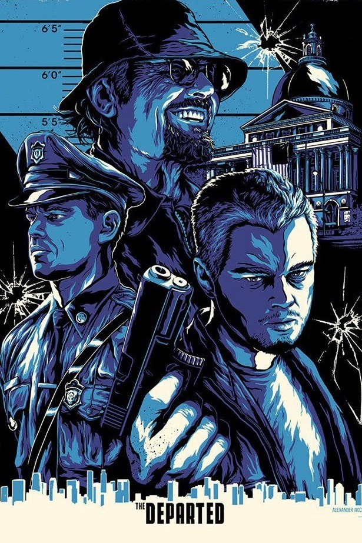
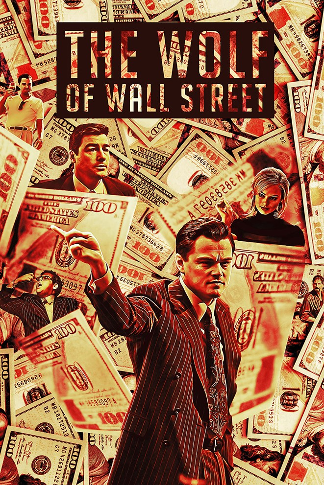
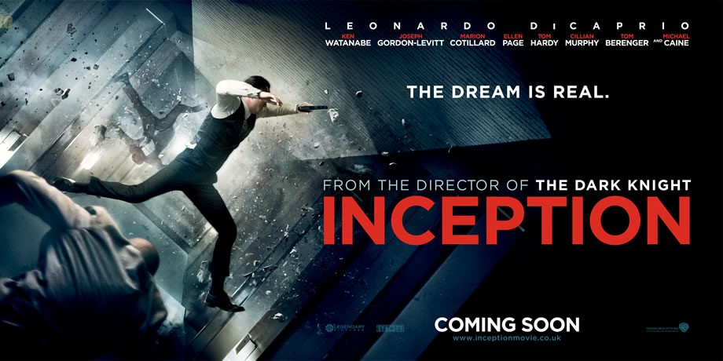
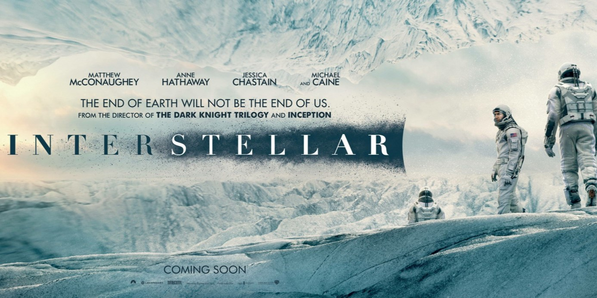
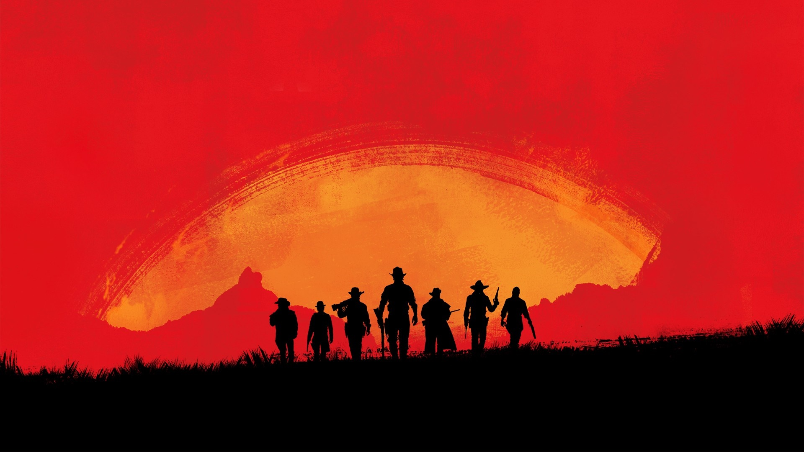
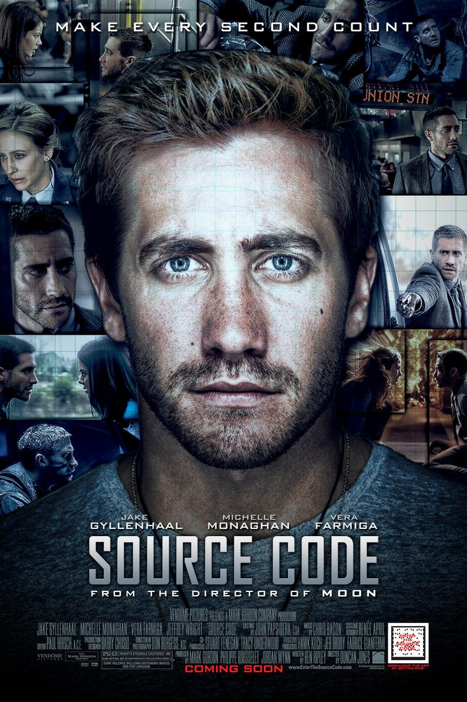
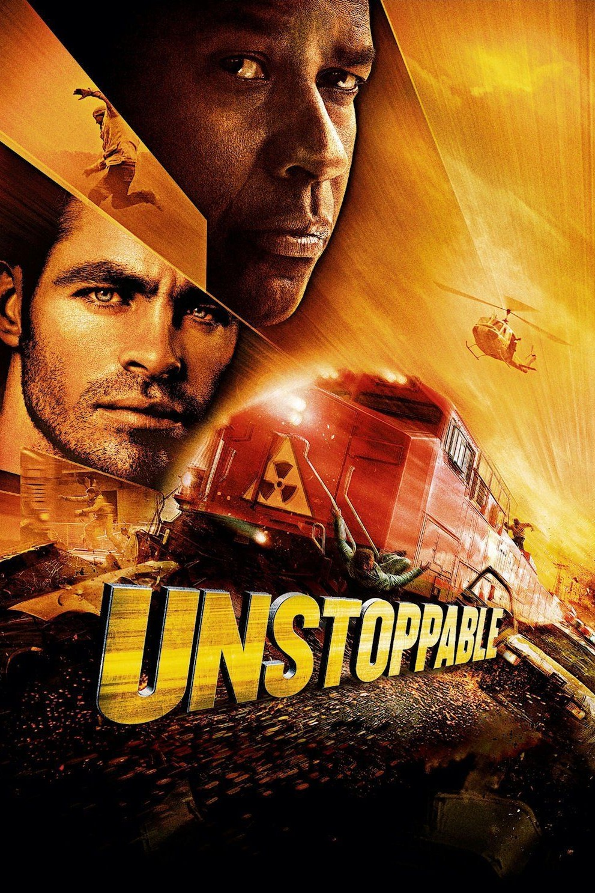
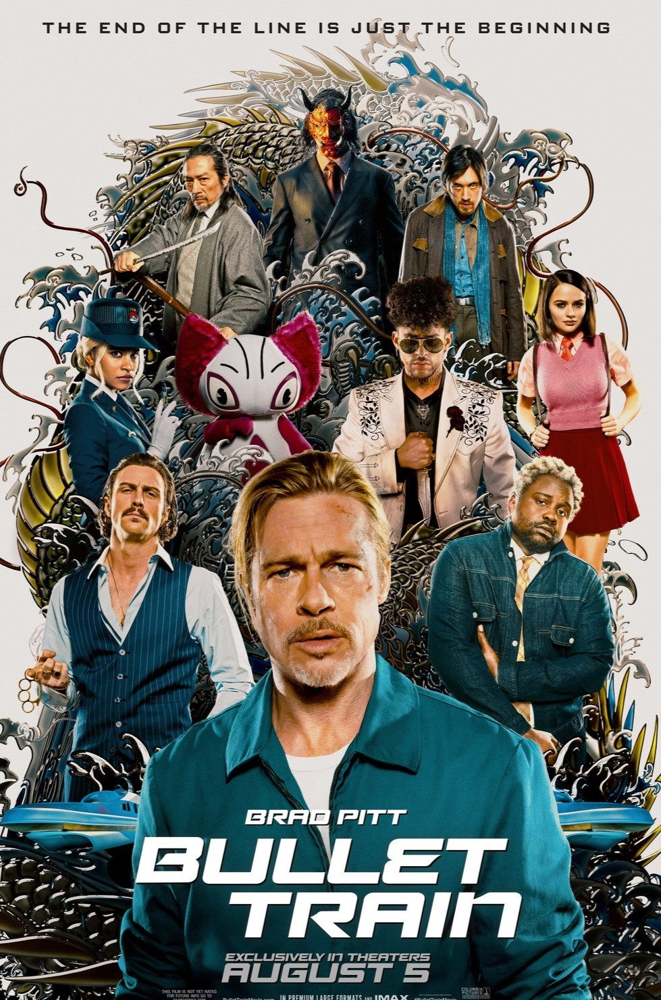
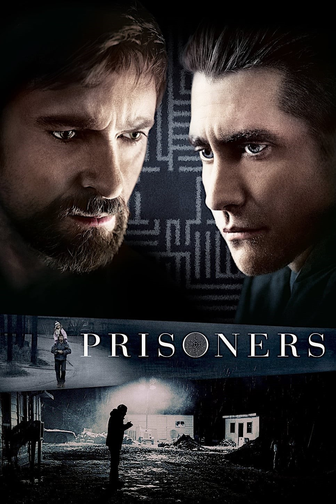
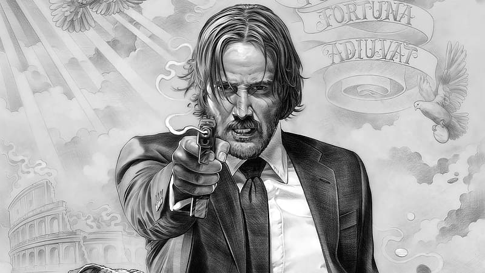

Django Unchained is a 2012 American revisionist Western film written and directed
by Quentin Tarantino, starring Jamie Foxx, Christoph Waltz, Leonardo DiCaprio, Kerry Washington, and
Samuel L. Jackson, with Walton Goggins, Dennis Christopher, James Remar, Michael Parks, and Don Johnson in
supporting roles. Set in the Old West and Antebellum South, it is a highly stylized, heavily revisionist
tribute to spaghetti Westerns, in particular the 1966 Italian film Django by Sergio Corbucci

THE DEPARTED
The Departed is a 2006 American epic crime thriller film directed by Martin
Scorsese and written by William Monahan.It is both a remake of the 2002 Hong Kong film Infernal
Affairs and also loosely based on the real-life Boston Winter Hill Gang; the character Colin Sullivan is
based on the corrupt FBI agent John Connolly, while the character Frank Costello is based on
Irish-American gangster and crime boss Whitey Bulger.The film stars Leonardo DiCaprio, Matt
Damon, Jack Nicholson etc.

WOLF OF WALL STREET
The Wolf of Wall Street is a 2013 American epic biographical black comedy crime film
co-produced and directed by Martin Scorsese and written by Terence Winter, based on Jordan Belfort's 2007
memoir of the same name. It recounts Belfort's career as a stockbroker in New York City and how his firm,
Stratton Oakmont, engaged in rampant corruption and fraud on Wall Street, leading to his downfall. The
film stars Leonardo DiCaprio as Belfort, Jonah Hill , Donnie Azoff,
Margot Robbie.

INCEPTION
Inception is a 2010 science fiction action film written and directed by
Christopher Nolan, who also produced the film with Emma Thomas, his wife. The film stars Leonardo DiCaprio
as a professional thief who steals information by infiltrating the subconscious of his targets. He is
offered a chance to have his criminal history erased, as payment for the implantation of another person's
idea into a target's subconscious.The ensemble cast includes Ken Watanabe, Joseph Gordon-Levitt,
Marion Cotillard, Elliot Page,Tom Hardy, Cillian Murphy, Tom Berenger, Dileep Rao and Michael Caine.

INTERSTELLAR
Interstellar is a 2014 epic science fiction film co-written, directed, and produced
by Christopher Nolan. It stars Matthew McConaughey, Anne Hathaway, Jessica Chastain, Bill Irwin, Ellen
Burstyn, Matt Damon, and Michael Caine. Set in a dystopian future where humanity is embroiled in a
catastrophic blight and famine, the film follows a group of astronauts who travel through a wormhole near
Saturn in search of a new home for humankind.

Cinema is a matter of what's in
the
frame and what's out.
- Martin Scorsese

SOURCE CODE
Source Code is a 2011 American science fiction action thriller film directed by
Duncan Jones and written by Ben Ripley on spec. It stars Jake Gyllenhaal as U.S. Army Captain Colter
Stevens, who is sent into an eight-minute digital recreation of a real-life train explosion, tasked with
determining the identity of the terrorist who bombed it.

UNSTOPPABLE
Unstoppable is a 2010 American disaster action thriller film directed and produced
by Tony Scott, written by Mark Bomback, and starring Denzel Washington and Chris Pine. It is based on the
real-life CSX 8888 incident, telling the story of a runaway freight train and the two men who attempt to
stop it. It was the last film Scott directed before his death in 2012.

BULLET TRAIN
Bullet Train is a 2022 American action comedy film directed by David Leitch and
starring Brad Pitt as an assassin who must battle fellow killers while riding a bullet train. It is based
on the 2010 novel Maria Beetle written by Kōtarō Isaka
and translated by Sam Malissa, the second novel in Isaka's Hitman trilogy, and adapted from grasshoper.

PRISONERS
Prisoners is a 2013 American thriller film directed by Denis Villeneuve and written
by Aaron Guzikowski. The film has an ensemble cast including Hugh Jackman, Jake Gyllenhaal, Viola Davis,
Paul Dano, Terrence Howard, Melissa Leo, and Maria Bello.

JOHN WICK
John Wick is a 2014 American action thriller film directed by Chad Stahelski and
written by Derek Kolstad. Keanu Reeves stars as John Wick, a legendary hitman who comes out of retirement
to seek revenge against the men who killed his dog, a final gift from his recently deceased wife. The film
also stars Michael Nyqvist, Alfie Allen, Adrianne Palicki, Bridget Moynahan, Dean Winters, Ian McShane,
John Leguizamo, and Willem Dafoe.